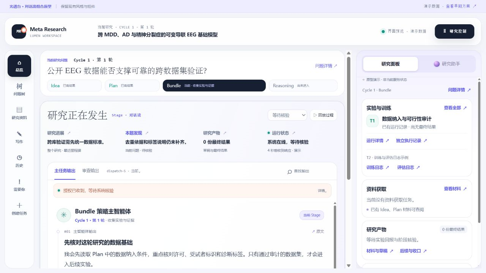
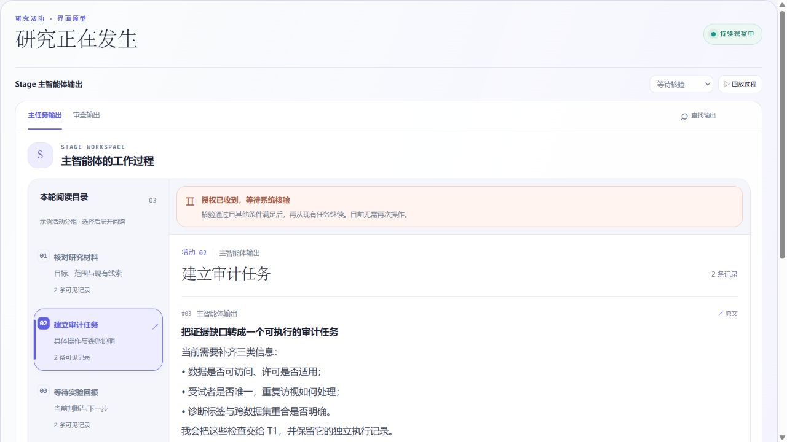
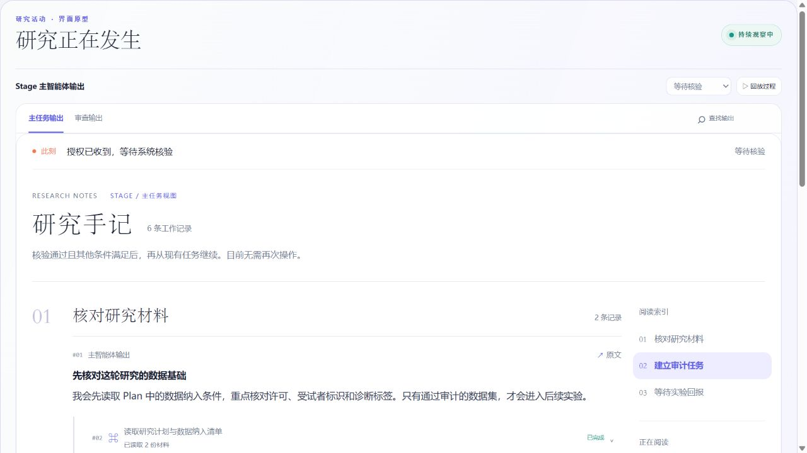

A已选择
对话流组合
连续输出与现有组件一起使用

中央阅读 Stage 的每一步。右侧切换研究面板与助手，实验日志可独立打开、最小化。
打开最新组合原型 ↗LUMEN / 光谱台 · 界面原型
已按你的选择更新 A：光谱台风格不变，现有组件保留入口
连续输出与现有组件一起使用

中央阅读 Stage 的每一步。右侧切换研究面板与助手，实验日志可独立打开、最小化。
打开最新组合原型 ↗早期备选 · 按活动集中阅读

按步骤定位并展开输出。图片保留早期设计，作为与对话流的比较参考。
查看早期备选 ↗早期备选 · 按章节回读过程

按章节组织说明、动作和决定。图片保留早期设计，后续以已选 A 为准。
查看早期备选 ↗